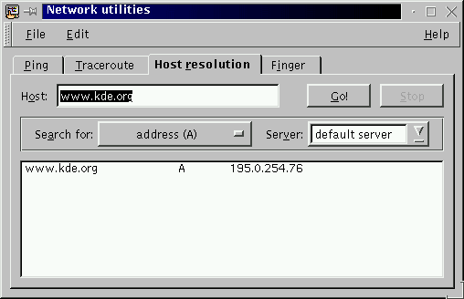

Next Previous Table of Contents
The Host resolution tab allows the execution of a host
resolution program (
host(1)
or
nslookup(8)). This
host resolution program will asks the Domain Name Server the answer to
the question asked.

This command looks for information about Internet hosts and domain names. It gets this information from a set of interconnected servers that are spread across the world. This set of interconnected servers are called the Domain Name Servers (DNS). The information is stored in the form of resource records belonging to hierarchically organized zones.
By default, the command simply converts between host names and Internet addresses. However, with the Search for options, it can be used to find all of the information about domain names that is maintained by the domain nameserver system. The information printed consists of various fields of the associated resource records that were retrieved.
The host field can be either host names (domain names) or numeric Internet addresses.
A numeric Internet address consists of four decimal numbers separated by dots,
e.g. 192.16.199.1, representing the four bytes of the 32-bit address.
The default action is to look up the associated host name.
A host name or domain name consists of component names (labels) separated by
dots, e.g. nikhefh.nikhef.nl. The default action is to look up all of
its Internet addresses.
For single names without a trailing dot, the local domain is automatically
tacked on the end. Thus a user in domain nikhef.nl can type in nikhapo, and it will actually look up nikhapo.nikhef.nl. In all
other cases, the name is tried unchanged. Single names with trailing dot are
considered top-level domain specifications, e.g. nl.
For a more precise description of the behaviour of this command, please see the
underlying program's man-page
host(1)
or
nslookup(8).
This allows you to specify a particular type of resource record information to be looked up. Supported types are listed below.
This is the name (or the address) of the domain name server to ask.
The resource type possible are:
A ___ the host's Internet address.
PTR _ the host name.
NS __ the name server for the named zone.
MX __ the mail exchanger.
CNAME the canonical name for an alias.
SOA _ the domain's ``start-of-authority'' information.
ANY _ all informations available.
This program is originally from Rutgers University. It has been rewritten by Eric Wassenaar, NIKHEF, <e07@nikhef.nl>.
Andrew Cherenson
Next Previous Table of Contents